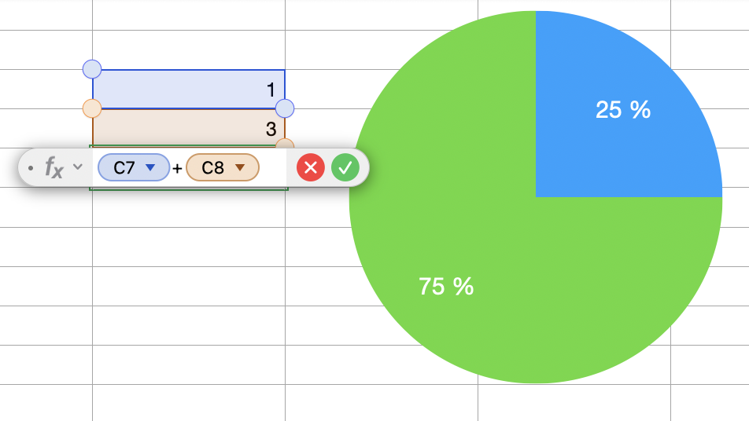
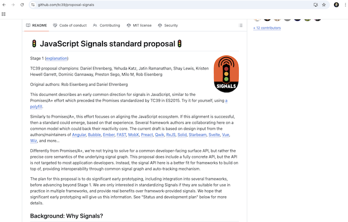
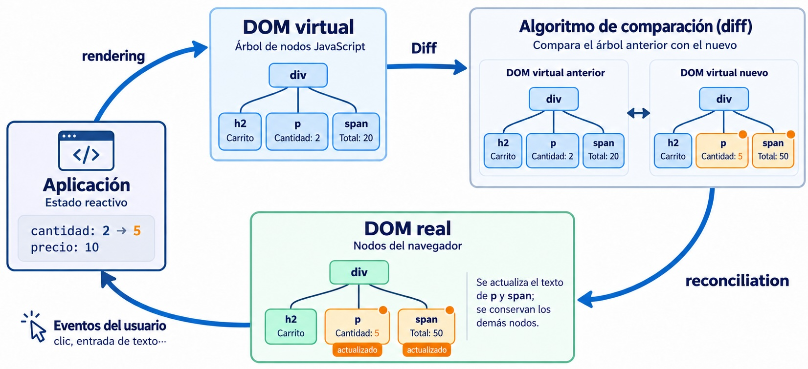
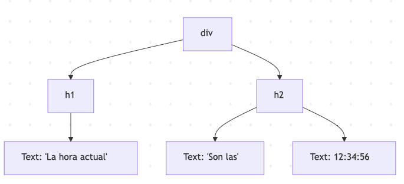

Recordemos que prácticamente todos los frameworks JS actuales tienen características similares:
(*) Algunos frameworks tienen esto integrado, en otros son plugins
En el contexto de los frameworks JS:
Reactividad: mantener sincronizados automáticamente los valores derivados con el estado del que dependen, sin que el programador tenga que propagar los cambios a mano
La vista también es un valor derivado: UI = f(estado). Repintar la interfaz cuando cambian los datos es un caso particular de lo mismo.
Si buscáis “programación reactiva” vais a encontrar cosas distintas a lo que vemos aquí:
En este tema, reactividad = mantener derivados (incluida la vista) sincronizados con el estado
En realidad la reactividad no es nada nuevo

Como ya sabíais, Javascript no es reactivo:
let cantidad = 2
let precio = 10
let total = cantidad * precio
console.log(total) //20
cantidad = 5
console.log(total) //no es 50, sigue siendo 20 😕
Los frameworks hacen que lo sea…hasta cierto punto (¡no pueden cambiar el lenguaje!)
Un sistema reactivo es un grafo de dependencias: cuando cambia una fuente, se recalcula lo que depende de ella
La vista es el efecto más importante: pintar en el DOM también es “hacer algo fuera”
volviendo al ejemplo de la hoja de cálculo
Con respecto a la reactividad
En el tema iremos respondiendo a estas preguntas
function Carrito() {
const [cantidad, setCantidad] = useState(2)
const precio = 10
const total = cantidad * precio
return <button onClick={() => setCantidad(cantidad + 1)}>Cantidad: {cantidad} Total: {total}</button>
}
total depende de cantidadsetCantidad), vuelve a ejecutar la función del componente enteratotal está siempre al día… porque se recalcula todoimport { reactive, computed, effect } from 'vue'
const estado = reactive({ cantidad: 2, precio: 10 })
// Derivado: se calcula a partir del estado
const total = computed(() => estado.cantidad * estado.precio)
// Efecto: hace algo "fuera" (aquí, escribir en la consola)
effect(() => console.log('total =', total.value))
estado.cantidad = 5 // -> total = 50
estado.precio = 15 // -> total = 75
const estado = { valor: 1 }
const handler = {
get(obj, prop, receptor) {
console.log('leyendo', prop) // Vue: track(obj, prop)
return Reflect.get(obj, prop, receptor)
},
set(obj, prop, val, receptor) {
console.log('cambiando', prop, 'a', val)
const ok = Reflect.set(obj, prop, val, receptor)
// Vue: trigger(obj, prop)
return ok // la trampa set DEBE devolver true si ha ido bien
}
}
const estadoProxy = new Proxy(estado, handler)
estadoProxy.valor = 2
console.log(estadoProxy.valor)
track, trigger, reactiveconst deps = new WeakMap() // objeto -> (propiedad -> Set de effects)
let efectoActivo = null
function track(obj, prop) {
if (!efectoActivo) return
let depsObj = deps.get(obj)
if (!depsObj) deps.set(obj, depsObj = new Map())
let dep = depsObj.get(prop)
if (!dep) depsObj.set(prop, dep = new Set())
dep.add(efectoActivo)
}
function trigger(obj, prop) { deps.get(obj)?.get(prop)?.forEach(ef => ef()) }
function reactive(obj) {
return new Proxy(obj, {
get(o, p, r) { track(o, p); return Reflect.get(o, p, r) },
set(o, p, v, r) { const ok = Reflect.set(o, p, v, r); trigger(o, p); return ok }
})
}
effect y computedfunction effect(fn) {
const ef = () => { const prev = efectoActivo; efectoActivo = ef; fn(); efectoActivo = prev}
ef()
}
export function computed(fn) {
const r = reactive({ value: undefined })
let creado = false
return {
get value() {
if (!creado) { creado = true; effect(() => { r.value = fn() }) }
return r.value
}
}
}
El framework SolidJS usa signals y effects, ideas muy similares a las de Vue
import { createSignal, createEffect } from "solid-js";
const [valor, setValor] = createSignal(1);
createEffect(() => console.log("valor", valor()));
setValor(valor()+1)
valor() es una función para que el framework pueda interceptar la operación de “leer valor” (ahí se hace el track).
En los últimos años las signals se han convertido en la primitiva de moda para la reactividad y se han incorporado a frameworks ya existentes como Angular, Preact o Svelte
En Svelte 5 la sintaxis son las runes (directivas para el compilador), por debajo hay signals
<script>
let count = $state(0);
let doubled = $derived(count * 2);
</script>
<h1>Contador: {count}</h1>
<h1>Doble: {doubled}</h1>
<button onclick={()=>count++}>Incrementar</button>
count = signal(0)
doble = computed(() => this.count() * 2)
// en la plantilla: {{ count() }} y {{ doble() }}
¿Cómo sabemos qué recalcular?: pasa de “no lo sabe” (como React, pero sin DOM virtual) a “lo rastrea en ejecución” (como Vue o Solid)

// Vue: rastreo automático...
watchEffect(() => console.log(count.value))
// Svelte 5
$effect(() => console.log(count))
// SolidJS
createEffect(() => console.log(count()))
// Preact signals
effect(() => console.log(count.value))
count = 1 y luego 2), Vue y Svelte agrupan: el efecto ve 0 y 2. Solid lo ejecuta al momento: 0, 1 y 2// Vue
const doble = computed(() => count.value * 2)
// Svelte 5
let doble = $derived(count * 2)
// SolidJS
const doble = createMemo(() => count() * 2)
// React: no hace falta (se recalcula en cada render)...
const doble = count * 2
// ...salvo que sea costoso: lo memoizamos
const resultado = useMemo(() => calculoCaro(count), [count])
| Derivado | Efecto | |
|---|---|---|
| Qué hace | Calcula y devuelve un valor | Hace algo fuera del grafo |
| Debe ser | Puro, sin efectos secundarios | Justo lo contrario |
| Cuándo se ejecuta | Cuando alguien lo lee (perezoso)* | Siempre que cambia una dependencia |
| ¿Cachea? | Sí | No tiene nada que cachear |
Regla práctica: si lo que haces es calcular un valor, es un derivado. Si para “calcularlo” necesitas asignar a otra variable dentro de un efecto, algo va mal.
* Salvo en SolidJS, donde createMemo es ansioso
createMemo es ansioso (eager) (se recalcula en cuanto cambia una dependencia, aunque nadie lo lea)useMemo las declaramos a manoimport { reactive, effect, computed } from 'vue'
const estado = reactive({ a: 1 })
const b = computed(() => estado.a * 2)
const c = computed(() => estado.a + b.value)
effect(() => console.log('c =', c.value))
estado.a = 2
c depende de a por dos caminos
¿Qué se imprime ahora? ¿c = 4 (con b todavía antiguo) y luego c = 6? ¿O solo c = 6?
function Contador() {
const [count, setCount] = useState(0)
console.log('render', count)
function sumarTres() {
setCount(count + 1)
setCount(count + 1)
setCount(count + 1)
}
return <button onClick={sumarTres}>{count}</button>
}
Al pulsar el botón, ¿cuántas veces se renderiza? (batching) ¿Cuánto vale count después? (pista: hay un bug)
nextTick<script setup>
import { ref, nextTick, onUpdated } from 'vue'
const count = ref(0)
const el = ref(null)
onUpdated(() => console.log('re-render')) // se imprime UNA vez
async function incrementar() {
count.value++
count.value++
count.value++
console.log(count.value) // 3: el dato ya ha cambiado
console.log(document.getElementById("par").innerText) // "0": el DOM todavía no
await nextTick()
console.log(document.getElementById("par").innerText) // "3"
}
</script>
<template>
<p id="par" @click="incrementar">{{ count }}</p>
</template>
await nextTick()UI = f(estado) dice que la vista es un derivado… pero escribir en el DOM es un efecto. Por eso el render es un effect: calcula la nueva vista y la aplica al DOM, que es la hoja del grafo.
| Año | Hito |
|---|---|
| 2010 | Knockout: observables y computed con rastreo automático de dependencias |
| 2010 | AngularJS: dirty checking (comprobar todo después de cada evento) |
| 2013 | React: renuncia a rastrear, “re-ejecuta y compara” con DOM virtual |
| 2014 | Vue: rastreo con getters/setters (Vue 2), proxies desde Vue 3 (2020) |
| 2016-19 | Svelte: reactividad resuelta en compilación |
| 2016 | Angular 2+: Zone.js avisa de que algo ha cambiado y se revisan los bindings de todo el árbol |
| 2021 | SolidJS 1.0: signals de grano fino sin DOM virtual |
| 2022-24 | Signals en Preact, Angular y Svelte 5. Propuesta de estandarización en TC39 |
| 2025 | Angular sin Zone.js por defecto en proyectos nuevos (v21): signals para saber qué refrescar |
| 2025-26 | React Compiler 1.0. Vue Vapor en release candidate |
La idea del rastreo automático ha vuelto, quince años después, a casi todos los frameworks… excepto React, que optimiza por otra vía
En un framework con DOM virtual hay tres fases distintas:
Cuando decimos “React re-renderiza todo el árbol” hablamos de la fase 1, no de que el navegador repinte toda la página
| Granularidad | Qué se re-ejecuta | Quién |
|---|---|---|
| Subárbol | El componente que cambia y todos sus descendientes, luego diff del DOM virtual | React |
| Componente | Solo los componentes que leen el dato, luego diff del DOM virtual | Vue 3 |
| Nodo | Solo la expresión / nodo del DOM afectado. Sin DOM virtual | SolidJS, Svelte 5, Vue Vapor, Preact con signals |
Cuanto mejor sabe el framework qué depende de qué más fina puede ser la actualización
Un componente App con dos hijos: Counter (muestra un contador) y Message (muestra un texto). Cada uno escribe en consola cuando se ejecuta.
¿Qué se ejecuta al incrementar el contador?
App, Counter y MessageApp y CounterLo vamos a comprobar en cada caso
Los componentes son funciones y la vista se define con JSX (una mezcla de JS y HTML)
function App() {
const items = ['Pan', 'Leche', 'Huevos', 'Frutas', 'Verduras'];
let lista
if (items.length > 0) {
lista = <div> <h2>Lista de la compra</h2>
<ul>
{items.map((item) => (
<li key={item}>{item}</li>
))}
</ul> </div>
}
else {
lista = <p> Tu lista está vacía </p>
}
return lista
}
jsx(...), antes React.createElement(...)) que devuelven objetos que describen las etiquetas, no nodos del DOMNuestro micro-ejemplo en React: al actualizar cualquier dato de App se ejecutan App, Counter y Message
¿Cómo reducir entonces el coste de actualizar el DOM?

Ejemplo del reloj. Aunque en el código de la función de render se genera el componente entero, en el navegador solo se está cambiando un nodo.

Según se mire, podéis considerar el DOM virtual como una idea genial o todo lo contrario…
Virtual DOM is pure overhead, Rich Harris
Posiblemente la mejor parte del DOM virtual es que le permite al desarrollador de React mantener un modelo mental sencillo: “la UI es una función del estado actual”
React.memo (no re-renderizar un componente si sus props no cambian), useMemo, useCallbackEl código generado por el compilador hace cosas como: “si el mensaje es el mismo que era antes, no renderices nada”
if ($[6] !== message) {
t3 = _jsx(Message, { message, onUpdateMessage: updateMessage })
$[6] = message
$[7] = t3
} else {
t3 = $[7] // mismo objeto que en el render anterior
}
<!-- Counter.vue -->
<script setup>
import { onBeforeUpdate } from 'vue'
defineProps(['count'])
defineEmits(['increment'])
onBeforeUpdate(() => console.log('Counter se ha re-renderizado'))
</script>
<template>
<h1>{{ count }}</h1>
<button @click="$emit('increment')">Incrementar</button>
</template>
Al incrementar: se re-renderizan App (su template lee count para pasarlo como prop) y Counter. Message no.
<script setup vapor>import { createSignal } from "solid-js";
import { render } from "solid-js/web"
function Contador() {
const [count, setCount] = createSignal(1);
return (
<div>
<h1>Contador reactivo con SolidJS</h1>
<h1>Contador: {count()}</h1>
<button onClick={() => setCount(count() + 1)}>Incrementar</button>
</div>
);
}
render(()=><Contador/>, document.getElementById("app"))
SolidJS compila el JSX a código que crea el DOM una vez y suscribe cada expresión dinámica a sus signals. Mirad la solapa “Output”.
Cada componente se ejecuta una única vez. Cuando cambia algo se actualizan solamente las dependencias, no el componente entero.
function Counter(props) {
console.log('Counter se ejecuta') // solo una vez, al crearlo
return <div>
<h1>{props.count}</h1>
<button onClick={props.onIncrement}>Incrementar</button>
</div>
}
function App() {
const [count, setCount] = createSignal(0)
console.log('App se ejecuta') // solo una vez, al crearlo
return <Counter count={count()} onIncrement={() => setCount(count() + 1)} />
}
Al incrementar no se ejecuta ningún componente: solo se actualiza el texto del <h1>
| Re-ejecutar y comparar (React) | Grano fino (signals) | |
|---|---|---|
| Modelo mental | Sencillo: la UI es una función del estado | Hay que saber qué es reactivo y qué no |
| Coste de actualizar | Proporcional al subárbol re-renderizado | Proporcional a lo que cambia |
| Memoria | Árboles virtuales | Grafo de dependencias (suscripciones) |
| Errores típicos | Renders de más, closures con valores antiguos | Perder la reactividad sin darse cuenta |
Vue está en medio: rastrea dependencias, pero por componente y con DOM virtual
// ❌ En <script> un ref se usa con .value (en la template no hace falta)
const n = ref(0)
n++
// ✅ n.value++
// ❌ Reasignar la variable de un reactive: la vista sigue mirando el proxy viejo
let lista = reactive([])
lista = await obtenerItems()
// ✅ const lista = ref([]); lista.value = await obtenerItems()
| Framework | ¿Cómo sabe qué recalcular? | Granularidad | Notas |
|---|---|---|---|
| React | No rastrea: re-ejecuta y compara | Subárbol + DOM virtual | memo / React Compiler reducen re-renders |
| Vue 3 | Rastreo en ejecución (proxies) | Componente + DOM virtual | Vapor (3.6): nodo, sin DOM virtual |
| Svelte 3/4 | Análisis en compilación | Nodo (código generado) | Runtime mínimo |
| Svelte 5 | Rastreo en ejecución (signals) | Nodo | Sigue siendo un compilador |
| SolidJS | Rastreo en ejecución (signals) | Nodo | Los componentes se ejecutan una vez |
| Angular | Antes: no rastrea (Zone.js + revisar el árbol). Ahora: rastreo en ejecución (signals) | Componente, sin DOM virtual | Con la estrategia antigua (Eager) revisa todo el subárbol |